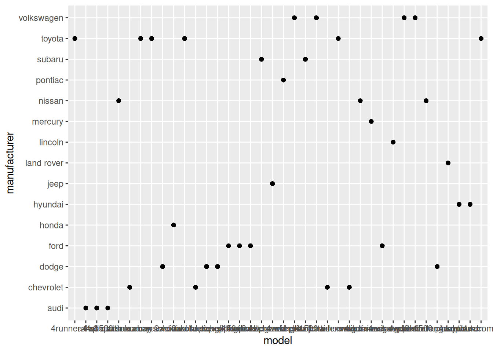
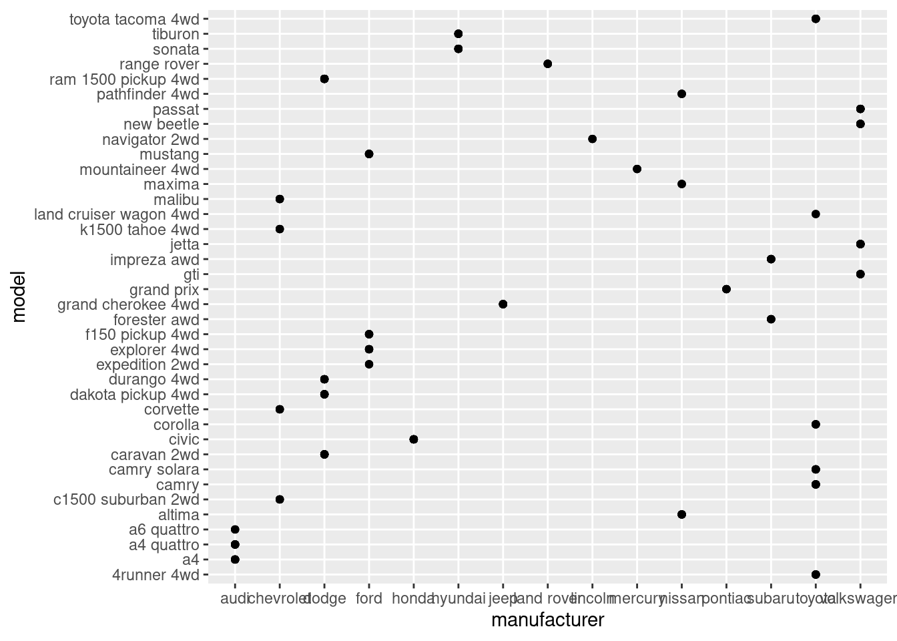
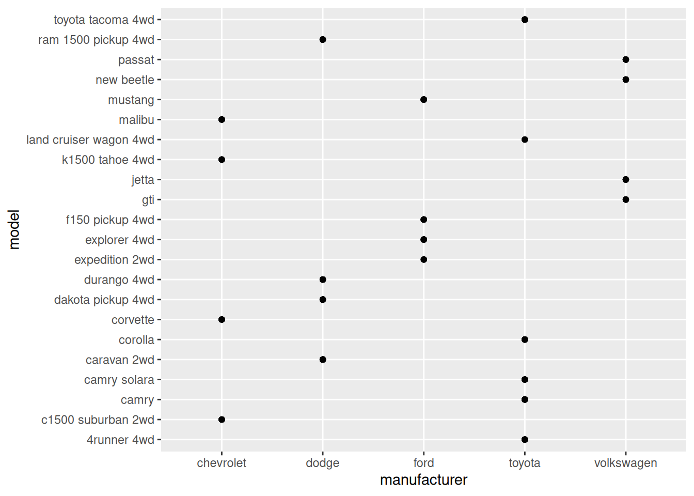
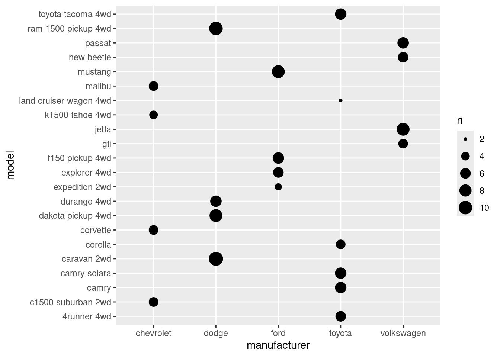

library(dplyr)
Attaching package: 'dplyr'The following objects are masked from 'package:stats':
filter, lagThe following objects are masked from 'package:base':
intersect, setdiff, setequal, unionlibrary(ggplot2)Continuing from part one, we’ll tackle the exercises from the book ggplot2: Elegant Graphics for Data Analysis (3e), or as I call it, G4DS. A name inspired from the book R4DS
Previously we read and comment on the lessons written on the book. But it turned out it made the post so much longer. This time, we’ll focus on the Exercises, and only briefly mention interesting points from the lessons.
Let’s load the 2 most useful libraries we might have to use for the exercises.
library(dplyr)
Attaching package: 'dplyr'The following objects are masked from 'package:stats':
filter, lagThe following objects are masked from 'package:base':
intersect, setdiff, setequal, unionlibrary(ggplot2)If then we need other libraries, we’ll add that later.
This part covers the most crucial part of ggplot2 syntax:
Every ggplot2 plot has three key components:
data,
A set of aesthetic mappings between variables in the data and visual properties, and
At least one layer which describes how to render each observation. Layers are usually created with a geom function.
Pretty useful to keep that in mind.
cty and hwyHow would you describe the relationship between
ctyandhwy? Do you have any concerns about drawing conclusions from that plot?
First, let’s inspect the dataset again
mpg # A tibble: 234 × 11
manufacturer model displ year cyl trans drv cty hwy fl class
<chr> <chr> <dbl> <int> <int> <chr> <chr> <int> <int> <chr> <chr>
1 audi a4 1.8 1999 4 auto… f 18 29 p comp…
2 audi a4 1.8 1999 4 manu… f 21 29 p comp…
3 audi a4 2 2008 4 manu… f 20 31 p comp…
4 audi a4 2 2008 4 auto… f 21 30 p comp…
5 audi a4 2.8 1999 6 auto… f 16 26 p comp…
6 audi a4 2.8 1999 6 manu… f 18 26 p comp…
7 audi a4 3.1 2008 6 auto… f 18 27 p comp…
8 audi a4 quattro 1.8 1999 4 manu… 4 18 26 p comp…
9 audi a4 quattro 1.8 1999 4 auto… 4 16 25 p comp…
10 audi a4 quattro 2 2008 4 manu… 4 20 28 p comp…
# ℹ 224 more rowsstr(mpg)tibble [234 × 11] (S3: tbl_df/tbl/data.frame)
$ manufacturer: chr [1:234] "audi" "audi" "audi" "audi" ...
$ model : chr [1:234] "a4" "a4" "a4" "a4" ...
$ displ : num [1:234] 1.8 1.8 2 2 2.8 2.8 3.1 1.8 1.8 2 ...
$ year : int [1:234] 1999 1999 2008 2008 1999 1999 2008 1999 1999 2008 ...
$ cyl : int [1:234] 4 4 4 4 6 6 6 4 4 4 ...
$ trans : chr [1:234] "auto(l5)" "manual(m5)" "manual(m6)" "auto(av)" ...
$ drv : chr [1:234] "f" "f" "f" "f" ...
$ cty : int [1:234] 18 21 20 21 16 18 18 18 16 20 ...
$ hwy : int [1:234] 29 29 31 30 26 26 27 26 25 28 ...
$ fl : chr [1:234] "p" "p" "p" "p" ...
$ class : chr [1:234] "compact" "compact" "compact" "compact" ...Alright, looks great. Let’s move on to the task. We’ll begin with a scatter plot. I find that very useful for visualizing relationship.
mpg |>
ggplot(aes(cty, hwy)) +
geom_point()
Quite a strong relationships. If we were to compute the Pearson’s r, it’ll be at least 0.8.
mpg |>
select(cty, hwy) |>
cor() cty hwy
cty 1.0000000 0.9559159
hwy 0.9559159 1.0000000Ohh, nevermind. It’s even close to 1. It makes sense to be so strong since the two variables are very similar, measuring the same metrics (miles per gallon). The difference is the place (city vs highway). We can also see that the cty variable is generally lower than hwy, because there are much more obstacles in a city than in a highway, reducing fuel efficiency.
Do you have any concerns about drawing conclusions from that plot?
I don’t have any. But since it’s been brought up, I guess there must be something. Let me know in the comments if you know what it is.
- What does
ggplot(mpg, aes(model, manufacturer)) + geom_point()show? Is it useful? How could you modify the data to make it more informative?
Both variables are categorical, which aren’t usually visualized with a scatter plot. Since they’re discrete and have limited range of values, the plot will look like lines.
Let’s see
mpg |>
ggplot(aes(model, manufacturer)) +
geom_point()
Oh, my bad. It’s lines. I guess lines only appear when the other variable is numerical. Anyway, it’s true that scatter plot is bad for measuring relationships between two categorical variables. We can’t even see the labels on the x-axis.
The first improvement would be to flip the x and y-axis since the x-axis is much wider than the y.
mpg |>
ggplot(aes(manufacturer, model)) +
geom_point()
Great, at least we can make sense some of the letters now, haha. Okay, i’m stuck here. Another way we could simplify this is to just take the top 5 manufacturers who produces the most amount of models, instead of visualizing all of them at once.
mpg |>
distinct(manufacturer, model) |>
group_by(manufacturer) |>
count() |>
arrange(desc(n))# A tibble: 15 × 2
# Groups: manufacturer [15]
manufacturer n
<chr> <int>
1 toyota 6
2 chevrolet 4
3 dodge 4
4 ford 4
5 volkswagen 4
6 audi 3
7 nissan 3
8 hyundai 2
9 subaru 2
10 honda 1
11 jeep 1
12 land rover 1
13 lincoln 1
14 mercury 1
15 pontiac 1So, the top five are toyota, chevrolet, dodge, ford, and volkswagen. Let’s put that into the filter:
mpg |>
filter(manufacturer %in% c('toyota', 'chevrolet', 'dodge', 'ford', 'volkswagen')) |>
ggplot(aes(manufacturer, model)) +
geom_point()
Now it’s much more readable. Since there are overlapping points, geom_count() would be better.
mpg |>
filter(manufacturer %in% c('toyota', 'chevrolet', 'dodge', 'ford', 'volkswagen')) |>
ggplot(aes(manufacturer, model)) +
geom_count()
However, something feels off. It feels like the visual barely gives you useful information compared to the table we’ve made with dplyr.
Let’s move on the last question.
Describe the data, aesthetic mappings and layers used for each of the following plots. You’ll need to guess a little because you haven’t seen all the datasets and functions yet, but use your common sense! See if you can predict what the plot will look like before running the code.
ggplot(mpg, aes(cty, hwy)) + geom_point()ggplot(diamonds, aes(carat, price)) + geom_point()ggplot(economics, aes(date, unemploy)) + geom_line()ggplot(mpg, aes(cty)) + geom_histogram()
This one is relatively easy compared to what we just did.
geom_point() will produce a scatter plot. We’ve created the exact plot on exercise #1.geom_line() is basically like scatter plots, except the dots are connectedgeom_histogram() will produce a histogram of a single variable, which is why the aes() function only takes one variable.Alright, that concludes part 2, key component. There’s still few key concepts left, we’ll continue that later sometimes in the future. I’d like to do some projects for now.
Leave a comment down below if you have any feedback. Thanks!
After writing this part, I looked up scatter plot and discovered that they’re not always bad for categorical variables. There are even dedicated scatter plot for it, such as strip plot, jitter plot, etc. Read more on Categorical Scatter Plots